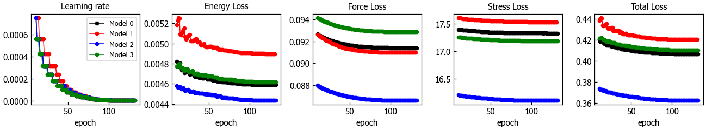

ALFF: Active Learning¶
Run the main ALFF active learning process.
PARAM.yaml: The parameters of the generator.MACHINE.yaml: The settings of the machines running the generator's subprocesses.

An example run:
-------------------------------- ALFF --------------------------------
Version: 0.1.dev409+g177de1d
Path: C:/conda/envs/py13/Lib/site-packages/alff
---------------------------- Dependencies ----------------------------
numpy 1.26.4 C:/conda/envs/py13/Lib/site-packages/numpy
scipy 1.14.1 C:/conda/envs/py13/Lib/site-packages/scipy
ase 3.23.1b1 C:/conda/envs/py13/Lib/site-packages/ase
thutil 0.1.dev122 C:/conda/envs/py13/Lib/site-packages/thutil
phonopy 2.29.1 C:/conda/envs/py13/Lib/site-packages/phonopy
----------------------- Author: C.Thang Nguyen -----------------------
----------------- Contact: http://thang.eu.org/email -----------------
___ __ ____________
/ | / / / ____/ ____/
/ /| | / / / /_ / /_
/ ___ |/ /___/ __/ / __/
/_/ |_/_____/_/ /_/
INFO: START ACTIVE LEARNING
INFO: ======================= iter_000000 ========================
INFO: ------------- iter_00000 stage_00: pre_train ---------------
INFO: Collecting data files
INFO: Split dataset
INFO: Prepare training args
INFO: Prepare train tasks
INFO: ------------- iter_00000 stage_01: run_train ---------------
INFO: Trainning ML models... be patient
Remote host: server_1
Remote path: \033[91m/uwork/user01/work/w24_alff_job\033[0m
Job info: log/2025Jan09_035212_dispatch.log
INFO: Running chunk 1 / 1 (4 of 4 jobs).
INFO: --------------- iter_00000 stage_02: post_train ------------
INFO: --------------- iter_00000 stage_03: pre_md ----------------
The directory "iter_00000/01_md" already existed. Select an action: [yes/no/backup]?
Yes: overwrite the existing directory and continue/update uncompleted tasks.
No: interrupt and exit process.
Backup: backup the existing directory and perform fresh tasks.
Please input your choice (y/n/b): y
Overwrite the existing directory
INFO: Prepare MD args
INFO: --------------- iter_00000 stage_04: run_md ----------------
INFO: ======================== iter_00004 ========================
INFO: --------------- iter_00004 stage_04: run_md ----------------
INFO: Running jobs on the remote machines
INFO: Machine 0, assigned 43 jobs
Remote host: 0.0.23.191
Remote path: /home/tha/work/w24_CAN_md
Job info: log/2025Feb28_183617_alff.log
INFO: Machine 1, assigned 29 jobs
Remote host: 0.0.177.80
Remote path: /mnt/d/_tmp_job/w24_WSL_md
Job info: log/2025Feb28_183617_alff.log
INFO: Machine 0, running 4 of 43 jobs (chunk 1/11).
INFO: Machine 1, running 2 of 29 jobs (chunk 1/15).
INFO: Machine 1, running 2 of 27 jobs (chunk 2/15). Time left 0:07
INFO: Machine 1, running 2 of 25 jobs (chunk 3/15). Time left 0:07
INFO: Machine 1, running 2 of 23 jobs (chunk 4/15). Time left 0:06
INFO: Machine 0, running 4 of 39 jobs (chunk 2/11). Time left 0:21
INFO: Machine 1, running 2 of 21 jobs (chunk 5/15). Time left 0:06
...
INFO: --------------- iter_00000 stage_05: post_md ---------------
INFO: --------------- iter_00000 stage_06: pre_dft ---------------
INFO: Prepare DFT tasks
INFO: --------------- iter_00000 stage_07: run_dft ---------------
INFO: Running jobs on the remote machines
Remote host: server_3
Remote path: /home1/p001cao/work/w24_tachyon_aldft
Job info: log/2025Jan09_035212_dispatch.log
INFO: Running chunk 1 / 2 (100 of 185 jobs).
INFO: Running chunk 2 / 2 (85 of 85 jobs). Time left 0:13
INFO: -------------- iter_00000 stage_08: post_dft ---------------
INFO: Collect data on the path: iter_00000/03_data
INFO: ======================== iter_00001 ========================
...